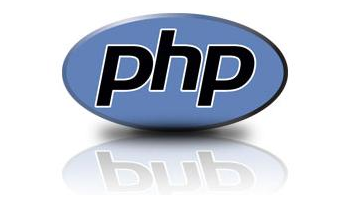

<section id="about-section">
    <div class="container">
        <div class="row text-center">
            <div class="col-sm-12" data-scroll-reveal>
                <h2 class="blackColor headers">O kursie</h2>

                <p>Pasjonujesz się najnowszymi technologiami IT? Chciałbyś dowiedzieć się jak pracuje programista w profesjonalnym zespole? A może już programujesz, ale interesuje Cię inwestycja w technologię o wzrastającej popularności i popycie na rynku pracy? Ta oferta jest dla Ciebie!</p>
            </div>

        </div>

        <br/>
        <div class="row">
            <div class="col-sm-6" data-scroll-reveal>
                
                <h3 class="text-transform-none">Cechy:</h3>
                <ul data-scroll-reveal>
                    <li>nowoczesny, obiektowo orientowany język programowania</li>
                    <li>głęboka integracja z systemem  Windows i platformą Microsoft .Net</li>
                    <li>alternatywa dla Javy, posiadająca dodatkowo takie mechanizmy jak extension methods i LINQ</li>
                </ul>
                <br/>
                <h3 class="text-transform-none">Zalety:</h3>
                <ul data-scroll-reveal>
                    <li>opanowanie składni opartej na języku C ułatwia naukę innych technologii (C++, PHP, Java) w przyszłości </li>
                    <li>duże zapotrzebowanie na rynku pracy</li>
                </ul>
                <br/>
                <a class="btn btn-primary" style="margin-left:40px;" target="_blank" href="https://docs.google.com/document/d/1T5TUKZe_htNUfvXrzXByVjLTT-DH55oE2RE1CL1Ijj8/edit">AGENDA</a>
            </div>
            <div class="col-sm-6" data-scroll-reveal>
                
                <h3 class="text-transform-none">Cechy:</h3>
                <ul data-scroll-reveal>
                    <li>język skryptowy, działający po stronie serwera</li>
                    <li>tworzenie dynamicznych stron WWW</li>
                    <li>komunikacja z bazami danych</li>
                </ul>
                <br/>
                <h3 class="text-transform-none">Zalety:</h3>
                <ul data-scroll-reveal>
                    <li>bardzo popularna technologia</li>
                    <li>przystępna dla początkującego programisty (uproszczenia składni)</li>
                    <li>umożliwia również tworzenie rozbudowanych i zaawansowanych aplikacji</li>
                </ul>
                <br/>
                <a class="btn btn-primary" style="margin-left:40px" target="_blank" href="https://docs.google.com/document/d/1T5TUKZe_htNUfvXrzXByVjLTT-DH55oE2RE1CL1Ijj8/edit">AGENDA</a>
            </div>
        </div>
        <br/><br/>
        <br/><br/>
        <div class="row text-center" style="font-size:25px;">
            <div class="col-sm-12">
                <p>KODUJ W <span class="greenTemplateColor">C#</span> I <span class="greenTemplateColor">PHP</span>, ZDOBĄDŹ POSADĘ <span class="greenTemplateColor">JUNIOR DEVELOPERA</span>!</p>
            </div>

        </div>
    </div>
</section>